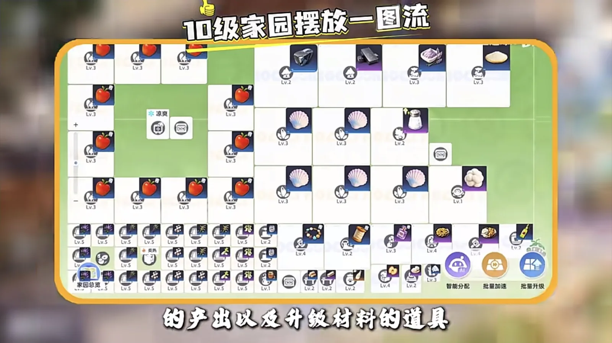
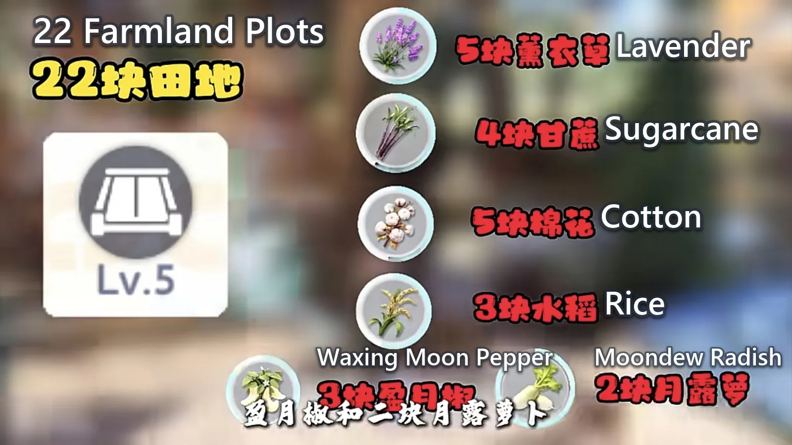
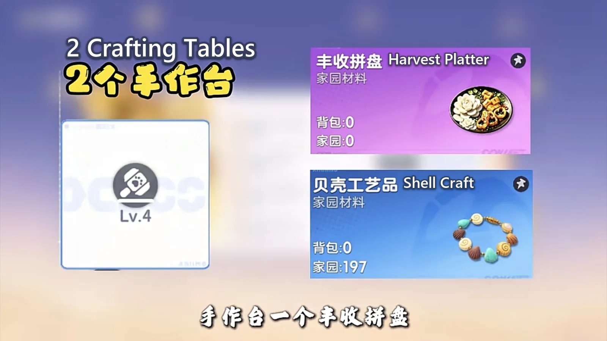
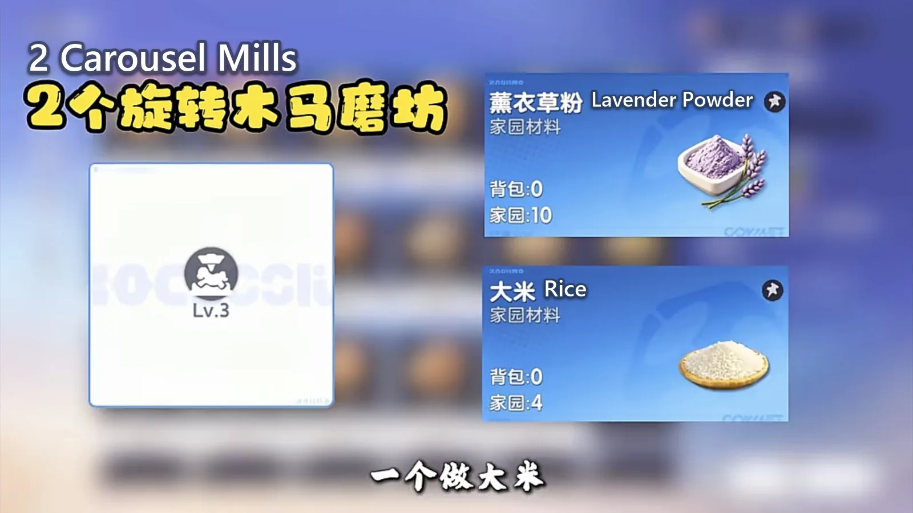
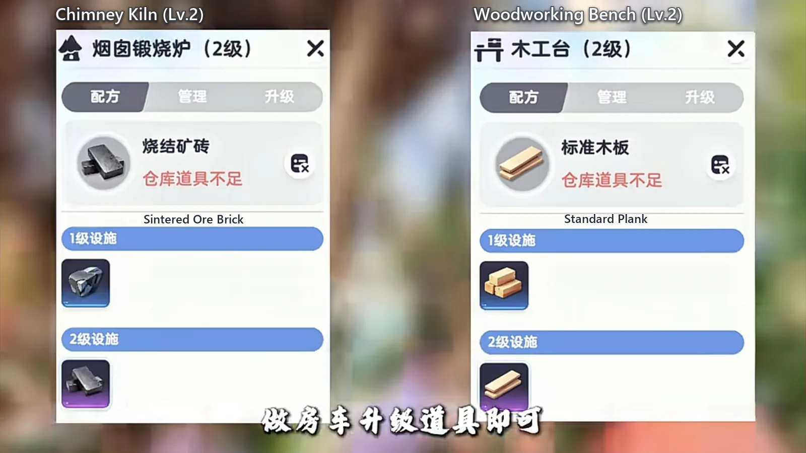
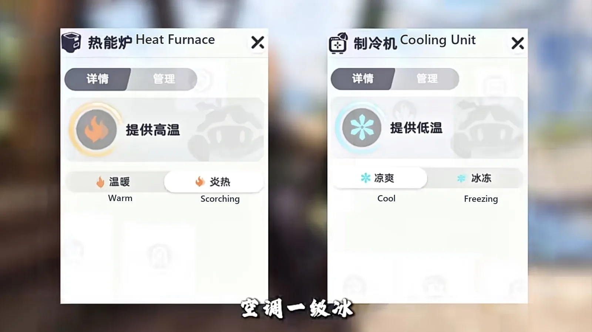

Home首页 / Guides攻略 / The Level 10 Homeland Layout: 22 Fields and One Machine per Recipe《伊莫》十级家园最优摆放方案
Checked核对于 October 27, 20262026 年 10 月 27 日
The Level 10 Homeland Layout: 22 Fields and One Machine per Recipe《伊莫》十级家园最优摆放方案
The whole level 10 base laid out: how the 22 farmland plots split across six crops, why every woodland and every mine grows one thing, which machine takes which raw material, and the two temperature settings worth touching.十级家园的整套摆放：二十二块田怎么分成六种作物、十一座林地和五座矿山为什么都只种一样、每台加工设施该接哪条原料线，以及温度只动哪两个档位。
Level 10 is where the Homeland stops being a tutorial. The farmland, the woodland, the mines, the wells and the processing machines are all on the board at once, and placement becomes the thing you are actually optimising: two bases with the same buildings, left alone for the same hours, do not come back with the same things. The one laid out properly fills the season order, the daily products and the RV upgrade parts in a single pass. The scattered one gets one of the three.十级家园才是这套玩法真正开始的地方。田地、林地、矿山、水井、加工设施这时候全都上台了，摆法本身就变成你在优化的东西 —— 同样的建筑、挂同样的时间，摆得对和摆得散，回来收到的不是一回事。摆得对的家园一次把赛季订单、日常成品和房车升级件都做出来，摆得散只拿得到其中一样。
What follows is one arrangement, laid out square by square. 22 farmland plots across six crops; 11 woodlands all on apples and 5 mines all on shells; 2 wells drawing plain water and nothing else; and every processing machine fed one raw-material line. Build it once, walk away, and the base runs on its own.下面这一套是按格子排满的一图流：二十二块田种六种作物，十一座林地全种苹果，五座矿山全采贝壳，两座水井只取清水；加工设施一条原料接一台机器，温度只动两个档位。摆完人就可以走开，家园自己转。

First the ground: 22 plots, six crops一、先分地：二十二块田，六种作物
Split the fields by what the machines downstream will ask for, not by what looks tidy. Lavender on 5 plots, sugarcane on 4, cotton on 5, rice on 3, the season crop Moonpepper on 3, and Moondrop Radish on 2. Five plus four plus five plus three plus three plus two is 22, which is the whole of your farmland at this level.怎么分不是看好不好看，是看下游的机器要什么。薰衣草 5 块、甘蔗 4 块、棉花 5 块、水稻 3 块、赛季作物盈月椒 3 块、月露萝卜 2 块。五加四加五加三加三加二正好 22 块，这一级的地就排满了。

Fixing the ratio is what makes the processing side possible. Lavender goes to a mill for powder, rice goes to a mill for grain, Moondrop Radish goes to a stove for flowers, and Moonpepper feeds the season line and nothing else. Get this step wrong and every machine downstream has the wrong queue standing in front of it.把比例定死，是因为加工那半边是照它搭的：薰衣草进磨坊出粉，水稻进磨坊出米，月露萝卜上灶台出花，盈月椒专供赛季那条线。这一步分错，后面每一台机器门口排的都是错的队。
The woodlands, the mines and the wells are not split at all. All 11 woodlands grow apples, all 5 mines collect shells, both wells draw plain water. Three raw materials, one of each, so nothing has to be sorted on the way in and every machine can be fed without a decision.林地、矿山、水井一处也不分：十一座林地全种苹果，五座矿山全采贝壳，两座水井只管采清水。原料压成三样，收的时候不用挑，加工台拿起来就能用。
Two Crafting Tables: one platter, one shell craft二、两台手作台：一台出拼盘，一台出贝壳
The two Crafting Tables are divided by what goes into them, not by how much comes out, because their inputs come from opposite ends of the base. One runs the Harvest Platter, which is the season item; the other turns the shells out of the mines into shell crafts, so the mines feed a table standing next to them rather than a warehouse.两台手作台按原料分工，不按产量分工 —— 因为它们的原料来自基地的两头。一台出丰收拼盘，那是赛季要的东西；另一台把矿山挖出来的贝壳做成贝壳工艺品，矿和手工两头接得上。

Two Carousel Mills: one for powder, one for rice三、两台旋转木马磨坊：一台出粉，一台出米
The Carousel Mill is the one machine worth doubling, because it serves two crops that never share a queue. One mill takes the lavender down to powder; the other takes the rice down to grain. Both eat what the fields grow, so neither competes with the heavy lines for floor space.旋转木马磨坊是这套里唯一值得摆两台的机器，因为它伺候两种永远排不到一起的作物：一台把薰衣草打成薰衣草粉，一台把水稻碾成大米。两台吃的都是田里种出来的东西，也不跟大件产线抢地方。

Everything else: one raw material, one product四、其余加工：一样原料对一样成品
The rest of the line is one machine, one job. Each of the facilities below takes a single input and puts out a single product, which is why none of them needs a second copy: the queue never grows long enough to matter.剩下的产线一台机器干一件事。下面每一台只吃一样原料、只出一种成品，所以都不需要第二台 —— 队排不到那么长。
| Facility设施 | What it makes产物 |
|---|---|
| Jukebox Dryer音乐烘干机 | Dried apple苹果果干 |
| Claw Game Cooker抓夹烹饪炉 | Roasted Waxing Moon Pepper烤盈月椒 |
| Simmering Pot熬制锅 | Rock sugar冰糖 |
| Phonolfactory Table留声制香台 | Lavender powder, on its own line薰衣草粉，单独一条线 |
| Bouncy Brew Keg蹦蹦酿造桶 | Apple juice苹果汁 |
| Blazing Stove超旺灶台 | Moondew Radish Flower月露萝卜花 |
| Pickling Jar风味腌制罐 | Premium sweet dew高级甜蜜露 |
| Joy Wheel Loom摩天轮纺车 | Postcards, with the RV alongside it明信片，要和房车一起 |
| Nimbus Bed绵云草床 | Wool羊毛 |
| Tidewhisper Sandcastle汐语沙堡 | Sea salt海盐 |
One row in that list is not a machine at all. Fragrance does not come out of any facility — it is produced by stationing a Dewy (Dark · Support) in the base, which is the one Aniimo this layout names. Everything else on the list is a building with its own recipe.这张表里有一行根本不是机器。香精不产自任何设施 —— 它要靠派驻采蜜鸟（暗 · 辅助）来出，这是整套摆放里唯一点名的一只伊莫。表上其余每一行都是一座有自己配方的建筑。
Woodworking Bench and Chimney Kiln: RV parts only五、木工台和烟囱锻烧炉：只做房车升级件
These two are not part of the daily output at all. The Woodworking Bench makes standard planks and the Chimney Kiln makes sintered ore bricks, and both exist for one purpose: the next RV level. Leave them on that recipe and let them sit. There is no reason to queue anything else behind the upgrade parts, and every reason not to.这两台不掺日常产出。木工台做标准木板，烟囱锻烧炉做烧结矿砖，两样都只为一件事存在：下一级房车。配方停在这两样上就别动了，摆在那儿等升级就够 —— 别的不用排，排了也没意义。

Two temperature settings, and then you leave them六、温度只调两档：火开二级，冰开一级
The Heat Furnace goes to its second notch, Scorching; the Cooling Unit stays on its first, Cool. Those two bands hand the whole base its growing temperatures, and once they are down and set there is no reason to touch either one again — which is the point of doing it last.热能炉调到第二档炎热，制冷机停在一档凉爽。整个家园的作物温度就吃这两条带子，摆好定住之后不用再动 —— 这也是为什么把它放在最后一步。

Season orders: hand in what you have, reroll the empty board七、赛季订单：有就交，没有就随
Orders are not worth farming. The finished goods sell for more than an order pays for them, and rerolling back and forth costs more time than the difference is worth. Hand in what you have; if the board is empty, reroll it once; make what turns up and let the rest go. The season order is what the base is actually running for.订单不值得硬刷。成品直接卖出去的价格比订单收益高，来回刷新订单又费事。有单就交；板子空了就随一次；随到就做，随不到就算。重心放在赛季订单上。
The one thing to spend on early: season coins from the daily activity go on seeds first, and only what is left over goes to the shop for blueprints.每天活动给的赛季币，先拿去买种子，剩下的再进商店换图纸。
The order to do it in照着摆一遍：三段
Three passes, and they are sequential, because each one sets up the next. First the ground: split the 22 plots six ways, then put every woodland and every mine on its single raw material. Then the machines: pair them up one to the next so that each stands beside what feeds it, and give the doubled machines one queue apiece. Last the temperature: heat on its second notch, cold on its first.摆的顺序就三段，而且前后必须接上，因为每一段都在定下一段。先摆地：二十二块田分六种，林地和矿山各自压成一样原料。再摆机器：一台接一台地排上去，让每台都挨着喂它的东西，两台双份的各自吃一条线。最后定温度：火二级、冰一级。
The ground fixes the raw materials, the processing fixes the products, the temperature fixes the speed. Once those three are done the base is somewhere you drop in to collect from, rather than somewhere you stand and manage.地定原料，加工定成品，温度定效率。这三段摆完，家园就是个你回来收一趟的地方，不是个要天天站着伺候的地方。
More guides相关攻略
- The Most Profitable Homeland: 400,000 a Night Out of a Level 6 Base最赚钱家园：六级家园一夜进账四十万，就看你怎么派这几只打工伊莫 — How the Homeland actually makes money: the two things that decide how fast a worker is, which Aniimo to station and where each one is caught, and why the warehouse ends up in the middle of the fields.家园到底靠什么赚钱：决定打工伊莫快慢的只有两样东西、每只该去哪儿抓，以及仓库为什么最后要放在田中间。
- Aniimo Homeland: A Detailed Beginner's Guide《伊莫》家园：新手怎么玩详细攻略 — How to get the Homeland open and keep it running: where the entrance is, the one tutorial step you cannot skip, what to plant first, how to sort your Aniimo into jobs, and what to do the moment you log in.家园从零开起来：入口在哪儿、哪一步引导不能跳、地里先种什么、伊莫怎么按属性排班，以及每天上线第一件事该做什么。